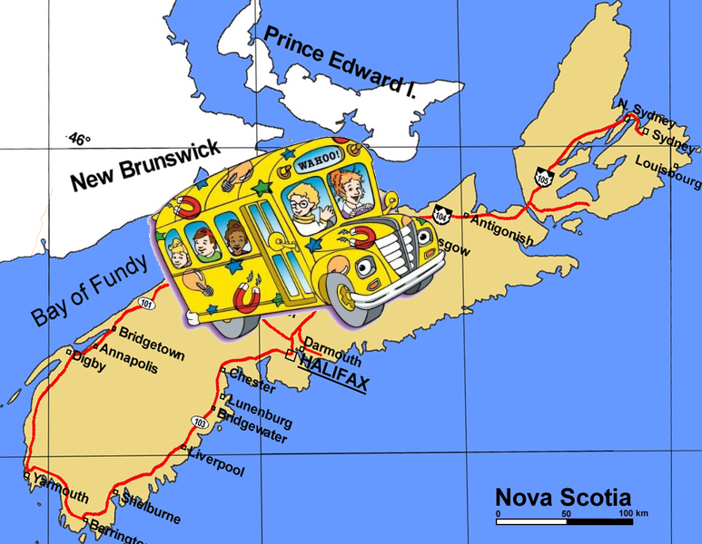

What is the best way to get kids to school?
Yes, The Magic School Bus is the obvious answer but because that bus runs on magic, and is fictional, the next best option is an electric bus! Rural municipalities in Nova Scotia currently use the absolute worst option, diesel engines buses, which are detrimental to both the health of the children and the environment.
- The first output would be a nice map of the route as a visual aid for policy makers /stakeholders. Other geospatial data could also be represented (if I find it later). The function should be flexible enough to be used for any school district.
- Another function would calculate the kilometers traveled and in conjunction with elevation data would output the energy needed for the trip. This could then be used to make an informed decision on which electric bus battery (ex 200 kw) would be needed.
- Other factors that affect battery capacity/discharge(?) (ie temperature, weather conditions, acceleration, load) would also need to be taken into consideration and hopefully I can write functions that would sort through those larger data sets and add the relevant info to the battery capacity reduction calculation.
- There has already been a pilot project in BC for which the electric bus data is available, so representing real world success could also be useful.
The initial input would be the daily route of the school bus
~~~~~~~~~~~~~~~~~~~~~~~~~~~~~~~~~~~~~~Thank you~~~~~~~~~~~~~~~~~~~~~~~~~~~~~~~~~~~~~~~~~~~~~~
